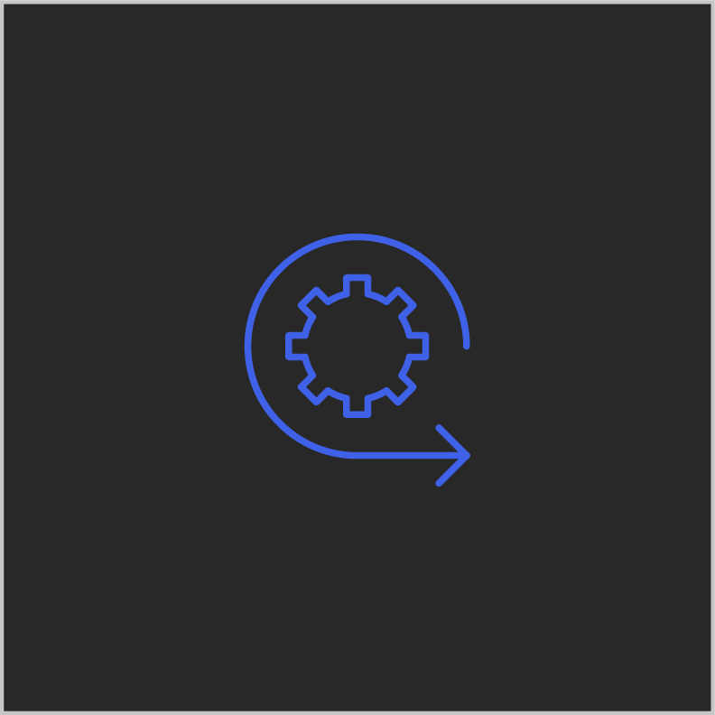

IBM Fix Central
Get fixes and updates foy your system's software, hardware, and operating system.
IMS Listserv
Subscribe to the IMS listserv and chat with the IMS team or other IMS customers.
Get fixes and updates foy your system's software, hardware, and operating system.
Subscribe to the IMS listserv and chat with the IMS team or other IMS customers.